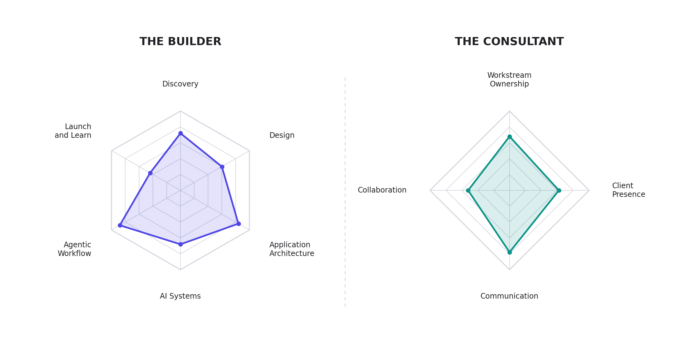

The Builder and the Consultant
To deliver on the aspiration of the AI Foundry, all of us are striving to become AI builder consultants.
An AI builder can build things for themselves. That alone makes a great entrepreneur. Adding the consultant dimension raises the challenge, because now you have to build something great for someone else, which puts real weight on communication, collaboration, client presence, and ownership of the outcome.
Two toolkits describe that person.

The Builder is what you can make. Six axes: Discovery, Design, Application Architecture, AI Systems, Agentic Workflow, and Launch and Learn. You self-report these at the start of fall semester and again in December, and you get your own profile back both times.
The Consultant is what changes when the work belongs to someone else. Four axes: Workstream Ownership, Client Presence, Communication, and Collaboration. These are not self-reported. The faculty advisor and your teammates rate them against observed behavior at midterm and at the end of each term.
Nobody arrives strong on all ten. Teams are staffed so the team covers every Builder axis even when no single member does.
Take the self-assessment
The baseline survey takes about seven minutes. It is self-report, not a test, and it does not affect your grade. We use it to staff teams so every team covers every skill, and to measure how far the cohort moves by December.
Take the Builder self-assessment →
A 2 is more useful to us than an inflated 4.
Once you have your profile, Resources has curated reading and courses for each axis, plus who to follow.
The two classes
| Build | The Foundry Lab | |
|---|---|---|
| Numbers | IS 693R · MSB 341 · CS 498R | MBA 693R-011 · STRAT 490R-001 |
| Meets | Mondays, 3:30 PM | Fridays, 8:00 to 11:50 AM |
| Orientation | You are the customer | You are the vendor |
| What you develop | The Builder toolkit, all six axes | The Consultant toolkit. The Builder gets tested here, not taught |
| How class time is used | Instruction. We teach a move, you apply it to your own project that week | Delivery. Problem solving and collaborating on live client engagements |
| Site | Course site | This site |
Prerequisite
Build (IS 693R / MSB 341) is the prerequisite for the AI Foundry Lab.1 It is offered every fall and every winter, so you can complete it in either semester and join the Lab in the following one.
Build exists so that you arrive at the Lab with the builder toolkit already in hand, and can spend your Friday mornings on the client rather than on the stack.
Three pathways, 2026-2027
If you are still developing the builder toolkit, consider enrolling in both classes. All three pathways are legitimate.
| Fall | Winter | Best for | |
|---|---|---|---|
| Option 1 | Build only | Foundry Lab | You want to focus on the builder toolkit first. No client work in fall |
| Option 2 | Build and Foundry Lab | Foundry Lab | You want to build the toolkit while being staffed on a project. Carve out the extra time |
| Option 3 | Foundry Lab only | Foundry Lab | You already have a strong builder foundation |
Whichever option you choose, you are a fully fledged member of the AI Foundry. Choose the one that sets you up for the most success given your current foundation and everything else going on in your life.
What you have already shipped does not decide whether you are in the Foundry. It decides what you own on a team: shadowing a project, contributing a piece with a backstop, or owning a workstream the client sees your name on. See How Teams Are Staffed.
What we expect, and what you receive
The commitment. The Lab is an intense course. Plan on 10 hours per week, including the Friday studio block, plus typically another 10 hours in weeks when client demand calls for it. That is what this work actually takes, and it is what a paying client is counting on.
Your tools. You are responsible for your own AI subscriptions. We build on frontier agent tooling, and at this stage of the program the Foundry does not provide seats. Plan on carrying your own.
The stipend. Foundry engagements are paid for by the client. Students staffed on a funded engagement receive a stipend applied to their student account. It does two things: it recognizes your contribution to paid client work, and it is meant to cover the cost of the AI subscriptions the work requires.
A few things to be clear about:
- The stipend follows the engagement. Students who are not staffed on a funded engagement in a given term do not receive one.
- Amounts come from a published revenue waterfall and your logged utilization, not from a per-engagement negotiation. See What You Give and What You Get.
- This is a stipend, not employment. You are not an hourly employee of the university or of the client.
- Money applied to a student account can interact with a financial aid package. If you receive need-based aid, check with the financial aid office before assuming it is additive.
Exceptions are granted for the 2026-2027 school year. The Foundry is running for the first time, so nobody has had the chance to take the prerequisite yet. For this year only, students may enroll in the Lab while still developing the builder toolkit, using one of the three pathways below. Because we do not have the luxury of a prerequisite this year, the first few Friday sessions will establish a common foundation in agentic AI building workflow. After that, class time assumes baseline AI builder knowledge and goes to live client work, with just-in-time skill sessions as specific engagements require them.↩︎